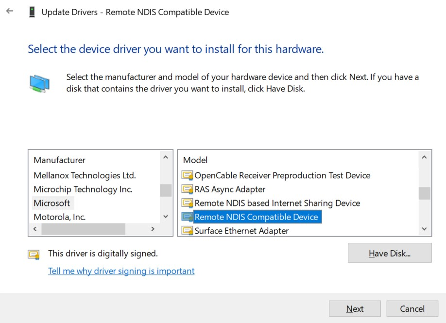
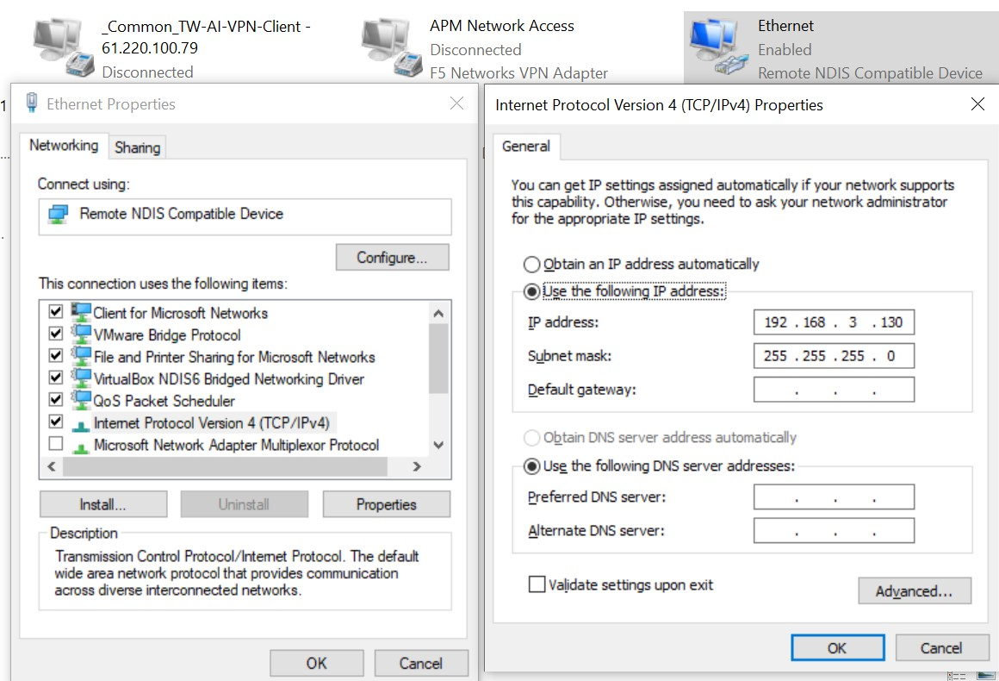

3. USB操作指南¶
3.1. 操作准备¶
USB 2.0 Host/Device的操作准备如下:
U-boot and Linux 内核使用SDK发布的U-boot 与 Kernel。
文件系统可以使用本地文件系统ext4或squashfs，也可以使用NFS。
Shell script“run_usb.sh”. run_usb.sh使用内核的USB ConfigFS功能来客制化USB device装置.使用者可参考并修改run_usb.sh来变更PID/VID与function的相关参数. 详细操作可参考内核文件” linux/Documentation/usb/gadget_configfs.txt”。
3.2. Uboot操作过程¶
3.2.1. Uboot下USB Host配置¶
Uboot下只支持U盘和硬盘储存设备. USB host在uboot默认为关闭，须打开相关config。
步骤1. 打开uboot下USB相关的驱动:
在板级 U-Boot 配置文件中使能下列选项。配置文件路径一般为 build/boards/cv184x/板名/u-boot/cvitek_板名_defconfig 。
请将路径中的 板名 替换为实际板级目录名（例如 cv1842hp_wevb_0014a_emmc），具体以 SDK 为准。
CONFIG_USB=y
CONFIG_DM_USB=y
CONFIG_USB_STORAGE=y
CONFIG_CMD_USB=y
若需更详细的 USB DWC2 调试日志（可选），可在同一 defconfig 中增加：
CONFIG_USB_DWC2_VERBOSE_DEBUG=y
3.2.2. Uboot下U盘¶
启动Uboot USB Host前的准备：
Uboot下USB Host不支持热插入，须在启动USB host前先插上设备. 若平台上有USB Hub，须确认Hub电源已打开，USB路径的Switch切到Host connector。
以cv184x为例（对应方法同样适用于cv181x）：
平台上电，进入uboot命令行，输入命令: usb start，观察是否识别成功。
cv184x# usb start
starting USB...
Bus usb@04340000: USB DWC2
scanning bus usb@04340000 for devices... 3 USB Device(s) found
scanning usb for storage devices... 1 Storage Device(s) found
若usb start后出现枚举报错或无法检测到设备，可在uboot命令行执行setenv usb_pgood_delay XXX，可针对预热较慢或是中间串了Hub的设备调整timeout值，建议取值范围为1000-3000。
识别完成后，再输入命令: usb tree，查看识别拓扑与速率。以下举例 USB host 串接 Hub 与 Mass Storage 设备。
cv184x# usb tree
USB device tree:
1 Hub (480 Mb/s, 0mA)
| U-Boot Root Hub
|
+-2 Hub (480 Mb/s, 100mA)
|
+-3 Mass Storage (480 Mb/s, 500mA)
Prolific Technology Inc. USB SD Card Reader ABCDEF0123456789AB
也可执行 usb storage 查看当前识别的 USB 存储设备摘要：
cv184x# usb storage
Device 0: Vendor: Rev: 1.00 Prod: SD Card Reader
Type: Removable Hard Disk
Capacity: 960.0 MB = 0.9 GB (1966080 x 512)
初始化及应用：
识别完成后可进入以下操作。
步骤1. 查看设备信息
命令行执行:
usb info可列出控制器上所有设备；执行usb info [dev]可查看指定设备号详情。
cv184x# usb info
1: Hub, USB Revision 1.10
- U-Boot Root Hub
- Class: Hub
- PacketSize: 8 Configurations: 1
- Vendor: 0x0000 Product 0x0000 Version 0.0
Configuration: 1
- Interfaces: 1 Self Powered 0mA
Interface: 0
- Alternate Setting 0, Endpoints: 1
- Class Hub
- Endpoint 1 In Interrupt MaxPacket 2 Interval 255ms
2: Hub, USB Revision 2.0
- Class: Hub
- PacketSize: 64 Configurations: 1
- Vendor: 0x058f Product 0x6254 Version 1.0
Configuration: 1
- Interfaces: 1 Self Powered Remote Wakeup 100mA
Interface: 0
- Alternate Setting 0, Endpoints: 1
- Class Hub
- Endpoint 1 In Interrupt MaxPacket 1 Interval 12ms
3: Mass Storage, USB Revision 2.10
- Prolific Technology Inc. USB SD Card Reader ABCDEF0123456789AB
- Class: (from Interface) Mass Storage
- PacketSize: 64 Configurations: 1
- Vendor: 0x067b Product 0x2731 Version 1.0
Configuration: 1
- Interfaces: 1 Bus Powered 500mA
Interface: 0
- Alternate Setting 0, Endpoints: 2
- Class Mass Storage, Transp. SCSI, Bulk only
- Endpoint 1 Out Bulk MaxPacket 512
- Endpoint 2 In Bulk MaxPacket 512
步骤2. FAT 文件系统列举与写入（可选）
若 U 盘分区为 FAT，可使用
fatls列举文件、fatwrite写入文件。设备与分区号请按实际环境修改（下例为usb 0第一个分区1）。
cv184x# fatls usb 0:1 /
System Volume Information/
2552840 boot.emmc
9887872 cfg.emmc
53395776 data.emmc
555520 fip.bin
temp/
555520 fip_spl.bin
991 partition_emmc.xml
3593016 ramboot.itb
5963904 rootfs.emmc
4919424 system.emmc
811136 yoc.bin
2627628 boot.spinor
1048704 data.spinor
959 partition_spinor.xml
2240512 rootfs.spinor
7712 run_usb.sh
1048576 test.bin
16 file(s), 2 dir(s)
cv184x# fatwrite usb 0:1 0x80000000 test2.bin 0x100000
1048576 bytes written in 369 ms (2.7 MiB/s)
cv184x# fatls usb 0:1 /
System Volume Information/
2552840 boot.emmc
9887872 cfg.emmc
53395776 data.emmc
555520 fip.bin
temp/
555520 fip_spl.bin
991 partition_emmc.xml
3593016 ramboot.itb
5963904 rootfs.emmc
4919424 system.emmc
811136 yoc.bin
2627628 boot.spinor
1048704 data.spinor
959 partition_spinor.xml
2240512 rootfs.spinor
7712 run_usb.sh
1048576 test.bin
1048576 test2.bin
17 file(s), 2 dir(s)
步骤3. 对 U 盘进行读操作（FAT）
分区为 FAT 时，可使用
fatload将文件读入内存：fatload usb dev:part loadaddr filename。dev、分区号、loadaddr、filename请按实际环境修改，示例如下：
cv184x# fatload usb 0:1 0x82000000 boot.spinor
2627628 bytes read in 272 ms (9.2 MiB/s)
步骤4. 对 U 盘进行写操作（FAT）
分区为 FAT 时，可使用
fatwrite从内存写入文件：fatwrite usb dev:part addr filename bytes。 示例如下（与步骤 2 中fatwrite用法一致）：
cv184x# fatwrite usb 0:1 0x80000000 test2.bin 0x100000
1048576 bytes written in 369 ms (2.7 MiB/s)
3.3. linux Host¶
3.3.1. USB 2.0 Host 操作过程¶
- 步骤1. 内核配置
使能 USB Host 及 U 盘存储相关配置。配置文件路径一般为
build/boards/cv184x/板名/linux/板名_defconfig。CONFIG_USB_SUPPORT=y CONFIG_USB=y CONFIG_USB_DWC2=y CONFIG_USB_GADGET=y CONFIG_USB_CONFIGFS=y CONFIG_USB_LIBCOMPOSITE=y CONFIG_USB_ROLE_SWITCH=y CONFIG_SCSI=y CONFIG_BLK_DEV_SD=y CONFIG_USB_STORAGE=y
步骤2. 切换为 Host 模式
若板级通过 GPIO 控制 USB 供电或 Host/Device 切换，请根据硬件设计操作对应 GPIO。 本示例中开发板连接 Q3 三极管、断开 Q4 三极管，并连接 R127、R125。 例如使用 GPIO 450 打开 USB 供电，请根据实际情况拉高或拉低电平。
echo 450 > /sys/class/gpio/export echo out > /sys/class/gpio/gpio450/direction echo 1 > /sys/class/gpio/gpio450/value将 OTG 控制器切到 Host 模式:
echo host > /proc/cviusb/otg_role
- 步骤3. 插入 U 盘
将 U 盘插入 USB 口，观察是否枚举成功。正常情况下串口打印类似:
[ 72.061964] usb 1-1: new high-speed USB device number 2 using dwc2 [ 72.315816] usb-storage 1-1:1.0: USB Mass Storage device detected [ 72.335934] scsi host0: usb-storage 1-1:1.0 [ 73.363027] scsi 0:0:0:0: Direct-Access Generic STORAGE DEVICE 1532 PQ: 0 ANSI: 6 [ 73.374407] sd 0:0:0:0: Attached scsi generic sg0 type 0 [ 73.558597] sd 0:0:0:0: [sda] 30253056 512-byte logical blocks: (15.5 GB/14.4 GiB) [ 73.566961] sd 0:0:0:0: [sda] Write Protect is off [ 73.571922] sd 0:0:0:0: [sda] Mode Sense: 21 00 00 00 [ 73.577899] sd 0:0:0:0: [sda] Write cache: disabled, read cache: enabled, doesn't support DPO or FUA [ 73.593961] sda: sda1 [ 73.602607] sd 0:0:0:0: [sda] Attached SCSI removable disk
sdXY 中 X 为磁盘号，Y 为分区号，请按实际环境修改。例如 log 中 sda1 表示 U 盘第一个分区； 多分区时会出现 sda1、sda2、sda3 等。
- 步骤4. 查看分区信息
运行
ls /dev查看设备节点:若无 sdXY（如 sda1），表示尚未分区，需先用
fdisk /dev/sda分区后再继续。若有 sdXY，表示已识别到 U 盘分区，可进行挂载与读写。
常用命令说明:
分区操作设备节点为 sdX，示例:
fdisk /dev/sda格式化分区 sdXY（如 FAT32）:
mkdosfs -F 32 /dev/sda1挂载分区 sdXY:
mount /dev/sda1 /mnt
- 步骤5. 挂载 U 盘
挂载目标分区到目录（以 sda1 挂到 /mnt 为例）:
mount /dev/sda1 /mnt
- 步骤6. 对 U 盘进行读写操作
挂载后即可按普通目录读写，例如:
# 查看 U 盘内容 ls /mnt # 从 U 盘复制到当前目录（读） cp /mnt/auto.sh ./ # 从当前目录复制到 U 盘（写） cp ./data.bin /mnt/ # 使用完毕后同步并卸载 sync umount /mnt
3.4. linux Device¶
3.4.1. 操作准备¶
使用 USB Device 前，需在设备树中确保 USB 控制器为 OTG 模式。在板级 DTS 文件中通过覆盖 usb 节点，将 dr_mode 设置为 "otg"。
DTS 路径一般为 build/boards/cv184x/板名/dts_arm/板名.dts。在文件中添加或确认如下覆盖节点:
&usb {
dr_mode = "otg";
};
修改后重新编译设备树并烧录至开发板。
3.4.2. 切换 switch GPIO¶
对于 EVB，会通过 switch IC 切换 Host 与 Device 通道，使用 USB 前需先操作对应 GPIO。请根据实际情况拉高或拉低电平。
echo 450 > /sys/class/gpio/export
echo out > /sys/class/gpio/gpio450/direction
echo 0 > /sys/class/gpio/gpio450/value
3.4.3. Device 作为存储设备的操作指南¶
内核配置 使能 USB Device 及 Mass Storage 相关配置，例如:
CONFIG_USB_SUPPORT=y CONFIG_USB=y CONFIG_USB_DWC2=y CONFIG_USB_GADGET=y CONFIG_USB_CONFIGFS=y CONFIG_USB_LIBCOMPOSITE=y CONFIG_USB_ROLE_SWITCH=y CONFIG_USB_F_MASS_STORAGE=y CONFIG_USB_CONFIGFS_MASS_STORAGE=y
切换为 Device 模式
参考本章 切换 switch GPIO 小节操作对应 GPIO。
将 OTG 控制器切到 Device 模式:
echo device > /proc/cviusb/otg_role
运行脚本 run_usb.sh 脚本位于板子
/etc目录下:/etc/run_usb.sh probe msc /dev/mmcblk0p1 /etc/run_usb.sh start
mmcblkXY 表示第 X 个磁盘（eMMC 或 SD）的第 Y 个分区，请根据实际情况选择。
连接 USB 线 通过 USB 线将平台与 Host 相连，Host 即可将平台识别为 USB 存储设备，并在
/dev下生成对应设备节点。
3.4.4. Device 作为终端设备的操作指南¶
内核配置 使能 USB Device 及 ACM/Serial 相关配置，例如:
CONFIG_USB_SUPPORT=y CONFIG_USB=y CONFIG_USB_DWC2=y CONFIG_USB_GADGET=y CONFIG_USB_CONFIGFS=y CONFIG_USB_LIBCOMPOSITE=y CONFIG_USB_ROLE_SWITCH=y CONFIG_USB_F_ACM=y CONFIG_USB_CONFIGFS_ACM=y CONFIG_USB_G_SERIAL=y CONFIG_USB_U_SERIAL=y CONFIG_USB_F_SERIAL=y CONFIG_USB_CONFIGFS_SERIAL=y
切换为 Device 模式
参考本章 切换 switch GPIO 小节。
将 OTG 控制器切到 Device 模式:
echo device > /proc/cviusb/otg_role
运行脚本 run_usb.sh 脚本位于板子
/etc目录下:/etc/run_usb.sh probe acm /etc/run_usb.sh start
连接 USB 线 通过 USB 将平台与 Host 相连，Host 即可识别为 USB 终端设备，并生成设备节点 ttyACMX（X 为同类型终端编号）。Device 端
/dev下会生成 ttyGSY（Y 为同类型终端编号）。Host 与 Device 可通过终端设备进行数据传输。
3.4.5. Device 作为 ADB 设备的操作指南¶
内核配置 使能 USB Device 及 FunctionFS 相关配置，例如:
CONFIG_USB_SUPPORT=y CONFIG_USB=y CONFIG_USB_DWC2=y CONFIG_USB_GADGET=y CONFIG_USB_CONFIGFS=y CONFIG_USB_LIBCOMPOSITE=y CONFIG_USB_ROLE_SWITCH=y CONFIG_USB_F_FS=y CONFIG_USB_CONFIGFS_FS=y
切换为 Device 模式
参考本章 切换 switch GPIO 小节。
将 OTG 控制器切到 Device 模式:
echo device > /proc/cviusb/otg_role
运行脚本 run_usb.sh 并启动 adbd 脚本位于板子
/etc目录下。adbd 需从 SDK 目录ramdisk/rootfs/public/adbd/<TOOLCHAIN>/usr/bin/adbd拷贝到板子后使用:/etc/run_usb.sh probe adb /etc/run_usb.sh start ./adbd &连接 USB 线 通过 USB 将平台与 Host 相连，Host 即可识别为 USB ADB 设备。
在 Windows 上使用 ADB
（1）安装 / 获取 ADB
官方 SDK Platform-Tools（推荐） 打开 https://developer.android.com/studio/releases/platform-tools ，下载 Windows 版 “SDK Platform-Tools” 并解压（例如解压到
C:\platform-tools）。
（2）把 adb 加入系统 PATH
右键此电脑 -> 属性 -> 高级系统设置 -> 环境变量。
在 “系统变量” 中选中 Path → “编辑” → “新建”，填入 adb 所在目录（如
C:\platform-tools），确定保存。关闭并重新打开一个 CMD 窗口使 PATH 生效。
（3）验证并连接板子
在新开的 CMD 中执行:
adb version
能输出版本信息说明 PATH 已生效。再执行:
adb devices
若列表中出现设备（如
xxxxxxxx device），再执行:adb shell
即可进入 adb 控制台。
3.4.6. Device 作为 RNDIS 设备的操作指南¶
内核配置 使能 USB Device 及 RNDIS 相关配置，例如:
CONFIG_USB_SUPPORT=y CONFIG_USB=y CONFIG_USB_DWC2=y CONFIG_USB_GADGET=y CONFIG_USB_CONFIGFS=y CONFIG_USB_LIBCOMPOSITE=y CONFIG_USB_ROLE_SWITCH=y CONFIG_USB_CONFIGFS_RNDIS=y CONFIG_USB_F_RNDIS=y CONFIG_USB_ETH_RNDIS=y CONFIG_USB_U_ETHER=y
切换为 Device 模式
参考本章 切换 switch GPIO 小节。
将 OTG 控制器切到 Device 模式:
echo device > /proc/cviusb/otg_role
运行脚本 run_usb.sh 并设置板端 IP 脚本位于板子
/etc目录下:/etc/run_usb.sh probe rndis /etc/run_usb.sh start ifconfig usb0 192.168.3.101 up连接 USB 线 通过 USB 将平台与 Host 相连，Host 即可识别为 USB Remote NDIS 设备。在 Windows 上需安装 “Remote NDIS Compatible Device” 驱动。
配置 Windows 驱动 在设备管理器中为 RNDIS 设备选择驱动：Device Manager -> 右键 RNDIS，后续步骤按照下图操作。 板端与 Windows 端配置同网段 IP，随后互 ping 验证连通性。


{kind=link}

{kind=link}

若出现 Windows 能 ping 通板端、板端 ping 不通 Windows 的情况，可在 Windows 侧添加入站规则允许 ICMPv4（推荐做法如下）：
按 Win + R，输入
wf.msc，回车，打开“高级安全 Windows 防火墙”。左侧点击“入站规则”，右侧点击“新建规则”。
选择“自定义” → 下一步。
“此规则应用于哪些协议和端口”：协议类型选“ICMPv4”（在“自定义”或下拉中选择 ICMPv4）→ 下一步。
操作：选择“允许连接” → 下一步。
配置文件：域、专用、公用 三项均勾选 → 下一步。
名称：填写“允许 Ping” → 完成。
完成后在板端执行（将 192.168.3.130 替换为实际 Windows IP）：
ping -c 4 192.168.3.130
重新连接 USB RNDIS 时
拔掉 USB 线。
执行
/etc/run_usb.sh stop。执行
/etc/run_usb.sh probe rndis、/etc/run_usb.sh start后再插上 USB 线。板端再次配置 IP，例如
ifconfig usb0 192.168.3.101 up。
3.5. 操作中需注意问题¶
操作中需要注意的问题如下:
系统开机后默认是Host mode. 若要使用Device mode须加载模块并执行USB ConfigFS 脚本. 当切换Device前，用户须确认以下事项:
USB Cable未连接Host。
平台上的硬件须切换到对应的USB mode。例如: 在切换到Device mode前，须关闭平台上的USB 5V供电。若平台上有带Hub,需关闭Hub电源并切换路径Switch到Device mode connector。
切换为Device mode后，若要再使用Host mode，用户须重新启动平台。
当平台做终端设备时，因TTY终端特性，若在短时间内传送大量数据, 可能造成数据遗失。用户使用此功能须注意此限制。
在Uboot下使用USB Host读取U盘时，注意若平台上有Hub，须打开Hub电源并切换路径Switch到正确的Connector。